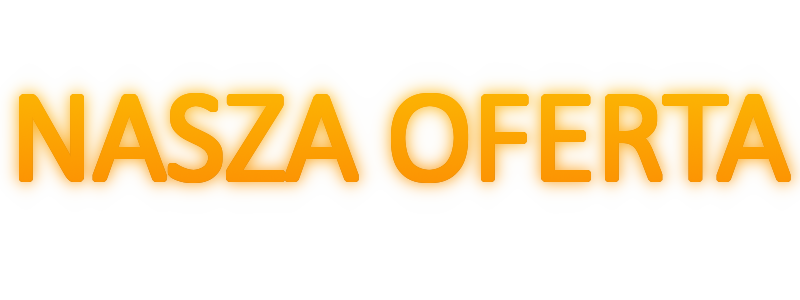

 Rower miejski to rower przeznaczony głównie do użytku w miastach. Zazwyczaj posiada wygodną geometrię ramy, szerokie opony i hamulce tarczowe, co zapewnia lepszą stabilność i bezpieczeństwo podczas jazdy w miejskim terenie. Rower ten jest często dostępny w systemie wynajmu, co umożliwia łatwe i szybkie przemieszczanie się po mieście bez konieczności posiadania własnego pojazdu.
Rower miejski to rower przeznaczony głównie do użytku w miastach. Zazwyczaj posiada wygodną geometrię ramy, szerokie opony i hamulce tarczowe, co zapewnia lepszą stabilność i bezpieczeństwo podczas jazdy w miejskim terenie. Rower ten jest często dostępny w systemie wynajmu, co umożliwia łatwe i szybkie przemieszczanie się po mieście bez konieczności posiadania własnego pojazdu.
Cena 1899zł
 Rower miejski to rower zaprojektowany specjalnie do jazdy po miejskich ulicach. Zwykle ma solidną ramę, wygodne siodło i uchwyty kierownicy, szerokie opony oraz zestaw praktycznych akcesoriów, takich jak koszyk na zakupy, błotniki i oświetlenie. Rower miejski jest często udostępniany przez systemy wypożyczalni rowerów publicznych, dzięki czemu jest łatwo dostępny dla każdego, kto potrzebuje szybkiego i ekologicznego środka transportu w mieście.
Rower miejski to rower zaprojektowany specjalnie do jazdy po miejskich ulicach. Zwykle ma solidną ramę, wygodne siodło i uchwyty kierownicy, szerokie opony oraz zestaw praktycznych akcesoriów, takich jak koszyk na zakupy, błotniki i oświetlenie. Rower miejski jest często udostępniany przez systemy wypożyczalni rowerów publicznych, dzięki czemu jest łatwo dostępny dla każdego, kto potrzebuje szybkiego i ekologicznego środka transportu w mieście.
Cena 799zł
 Rower trekingowy to rodzaj roweru, który został zaprojektowany z myślą o długich i wymagających wycieczkach turystycznych po różnych terenach. Zazwyczaj charakteryzuje się on wygodnymi uchwytami kierownicy, szerokimi oponami, amortyzowaną ramą oraz zestawem akcesoriów, takich jak bagażnik, bidon, pompka, lusterko i oświetlenie. Rower ten jest idealny dla osób, które lubią aktywny wypoczynek na łonie natury i chcą zwiedzać okolicę, pokonując różne trasy i przeszkody.
Rower trekingowy to rodzaj roweru, który został zaprojektowany z myślą o długich i wymagających wycieczkach turystycznych po różnych terenach. Zazwyczaj charakteryzuje się on wygodnymi uchwytami kierownicy, szerokimi oponami, amortyzowaną ramą oraz zestawem akcesoriów, takich jak bagażnik, bidon, pompka, lusterko i oświetlenie. Rower ten jest idealny dla osób, które lubią aktywny wypoczynek na łonie natury i chcą zwiedzać okolicę, pokonując różne trasy i przeszkody.
Cena 1599zł
 Rower górski to specjalistyczny rower, który został zaprojektowany z myślą o jazdach po trudnym, nierównym terenie, takim jak góry, lasy czy szlaki górskie. Charakteryzuje się on mocną i wytrzymałą ramą, amortyzowanym zawieszeniem, szerokimi oponami z bieżnikiem dobrej jakości oraz hamulcami tarczowymi. Rower górski pozwala na szybką i bezpieczną jazdę w trudnym terenie.
Rower górski to specjalistyczny rower, który został zaprojektowany z myślą o jazdach po trudnym, nierównym terenie, takim jak góry, lasy czy szlaki górskie. Charakteryzuje się on mocną i wytrzymałą ramą, amortyzowanym zawieszeniem, szerokimi oponami z bieżnikiem dobrej jakości oraz hamulcami tarczowymi. Rower górski pozwala na szybką i bezpieczną jazdę w trudnym terenie.
Cena 2199zł
 Rower BMX to rower specjalistyczny, który został zaprojektowany z myślą o wykonywaniu akrobacji i jazdy w skateparkach, na torach do dirtu lub w ulicznych wyścigach. Charakteryzuje się on niewielką, lekką ramą, 20-calowymi kołami z szerokimi oponami, specjalistycznymi hamulcami i uchwytami kierownicy o dużym nachyleniu. Rower BMX jest idealny dla ludzi, którzy chcą poprawić swoje umiejętności jazdy na rowerze i wykonują różnego rodzaju triki, skoki i ewolucje.
Rower BMX to rower specjalistyczny, który został zaprojektowany z myślą o wykonywaniu akrobacji i jazdy w skateparkach, na torach do dirtu lub w ulicznych wyścigach. Charakteryzuje się on niewielką, lekką ramą, 20-calowymi kołami z szerokimi oponami, specjalistycznymi hamulcami i uchwytami kierownicy o dużym nachyleniu. Rower BMX jest idealny dla ludzi, którzy chcą poprawić swoje umiejętności jazdy na rowerze i wykonują różnego rodzaju triki, skoki i ewolucje.
Cena 999zł
 Rower miejski to rower zaprojektowany specjalnie do jazdy po miejskich ulicach. Zwykle ma solidną ramę, wygodne siodło i uchwyty kierownicy, szerokie opony oraz zestaw praktycznych akcesoriów, takich jak koszyk na zakupy, błotniki i oświetlenie. Rower miejski jest często udostępniany przez systemy wypożyczalni rowerów publicznych, dzięki czemu jest łatwo dostępny dla każdego, kto potrzebuje szybkiego i ekologicznego środka transportu w mieście.
Rower miejski to rower zaprojektowany specjalnie do jazdy po miejskich ulicach. Zwykle ma solidną ramę, wygodne siodło i uchwyty kierownicy, szerokie opony oraz zestaw praktycznych akcesoriów, takich jak koszyk na zakupy, błotniki i oświetlenie. Rower miejski jest często udostępniany przez systemy wypożyczalni rowerów publicznych, dzięki czemu jest łatwo dostępny dla każdego, kto potrzebuje szybkiego i ekologicznego środka transportu w mieście.
Cena 2499zł